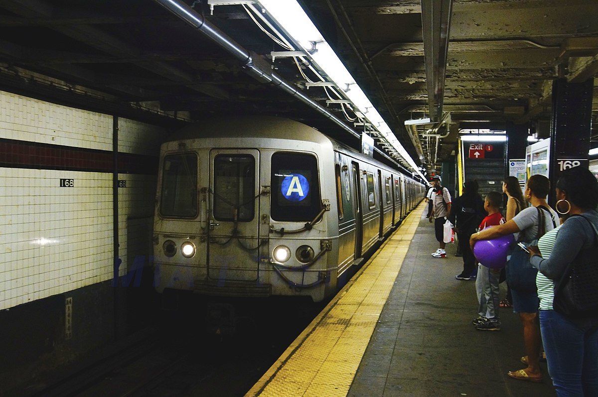
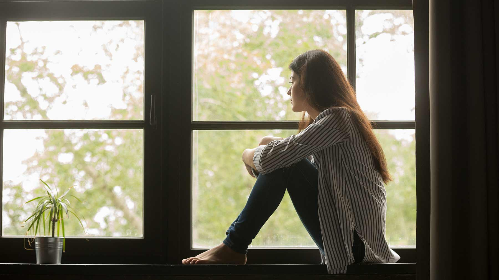
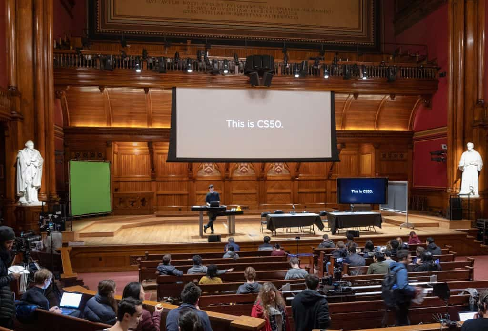
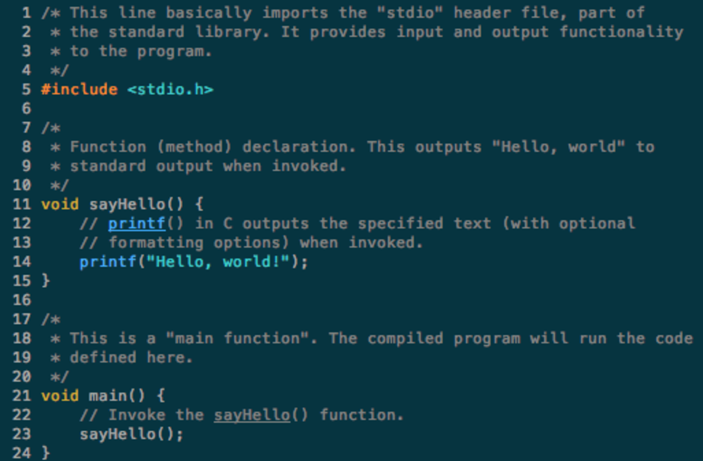

Intellectual Change
Before the “time of the Rona”, I did not have a lot of time on my hands. A normal day would start by my waking up in the morning at 6:10, leaving the house at 6:30 to get to Stuyvesant at 7:30. From there, school would last until 3:35, where I would commute back to the public library, where I would stay until 5:45, where I made the final leg of my “journey” and arrived at home at 6:00. From there, I would do my homework and have little time for anything else. Therefore, I was not able to advance my curiosity for knowledge far past the edges of the sheets of paper that I did my homework on.

And then the Portal opened, on the 23rd of March 2020. My commute disappeared into thin air (along with 1/3rd of the subway cars). Classes, taught through Zoom, were irregular and did not happen even once every day (at least for me). Tout à coup, I had access to an unimaginable amount of free time! What should I do with this time? Should I rest, chat, and play and take life easy (as most Stuyvesant students, if not all, would like to do)? It was what I did at first. I read New York Times (thus the inspiration for the fonts), and this is where I found an article about edX, where I signed up for my first online class outside of school boundaries, CS50x.
CS50x, as is stated on their homepage, is an “Introduction to the intellectual enterprises of computer science and the art of programming”. “Oh, this will be easy!”, I thought, blissfully unaware of the syllabus contents, or of the name of the school that was offering the course. It wasn’t even a few days until I was regretting my arrogance towards this course, while struggling through Caesar. While I did complete this course, and eventually another one, CS50AI, my attitude towards everything changed dramatically.


What I have learned over the course of remote learning and quarantine, is that while something might seem easy, one can learn a lot from even the easiest things. For example, learning C, while I thought I would never do it and would never have to, was extremely beneficial towards my total understanding of computer science. Also, I learned that time, when it is made available, whether by natural circumstances or by unexpected changes, is not meant to be wasted. A pandemic on the scale of this year’s will probably never happen again in our lives, and we will never have time on this scale again. When we work 9-to-5 jobs, and arrive home to 2 kids who need feeding, schooling, and care, will time exist to take care of us?